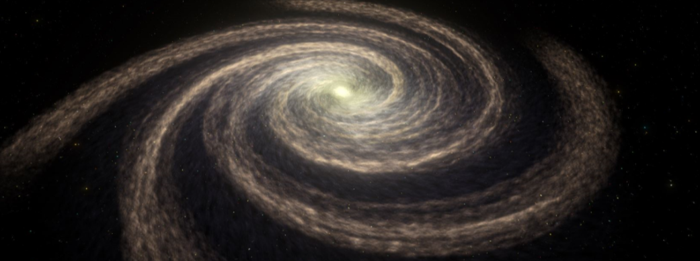
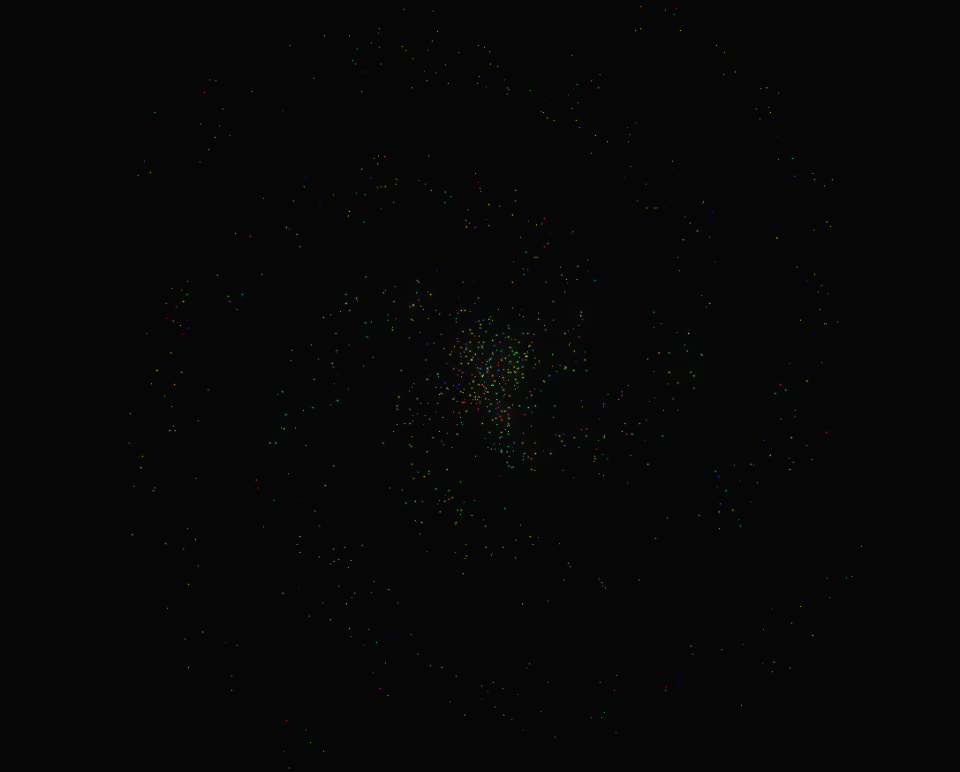
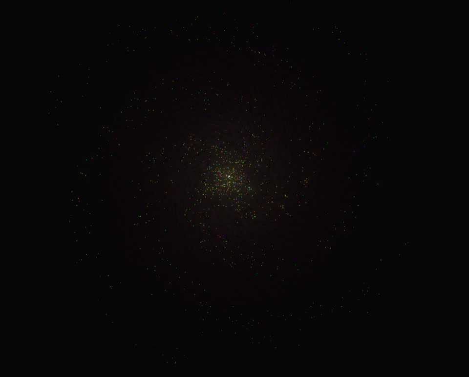
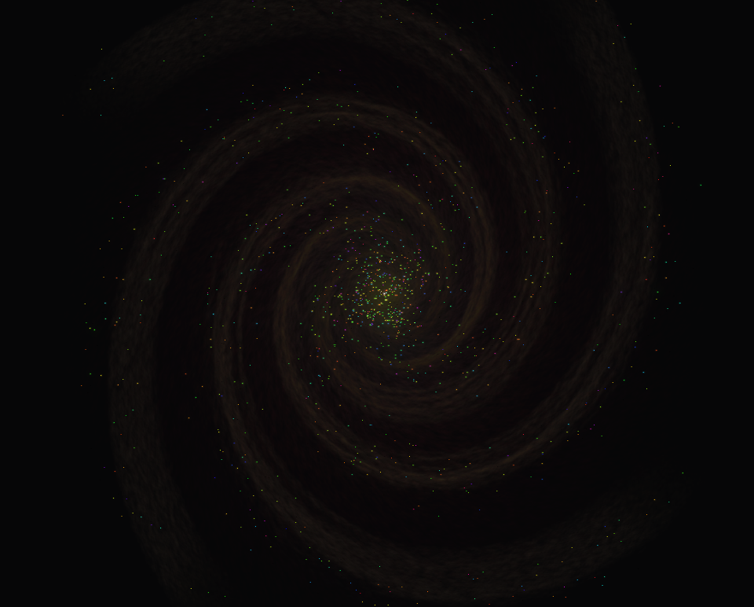
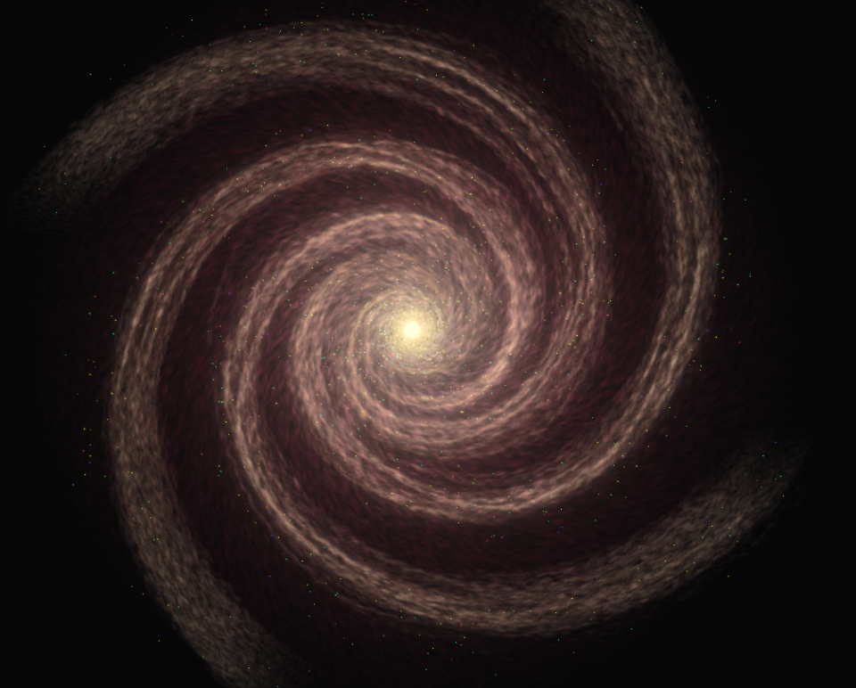

Procedural Galaxy Generator

During late 2023, I got to work on a personal hobby project to develop a procedural galaxy generator as a part of a video game I am working on. I wanted the generator to be able to output
differing and unique galaxies that where volumetric, meaning that the camera should be able to move through them. The idea in turn was to be able to use the galaxies as a backdrop from which to
create skyboxes for solar systems, which can be created by clicking on each of the stars.
The galaxy generator can be split into two different parts. The first consists of placing the stars in a spiral pattern around a central axis position. In this step, the number of spirals for the galaxy,
as well as their curvature and the "weight" of the center of the galaxy are randomized. Each star is placed in a weighted disk around the center of the galaxy, after which it is moved towards the closest point of the closest
spiral.
The second part of the generator consists of the VFX. The particles used to generate this are created using the Unity VFX graph using a set of parameters ranging from coloration to
particle velocity, noise and vector fields. These sets of parameters are also genererated in the galaxy generator script using the same randomizer seed as the stars themselves, leading to a unique set of VFX for each
different galaxy. The particles are generated through two separate systems. The first of these systems instantiate particles in a torus around the center of the galaxy. Each instantiated particle is then subjected to a
force causing it to move towards the center of the galaxy while also providing a bit of rotational movement. The second particle system was aimed at representing the spiral "arms" of the galaxy. In order to do this,
particles are instantiated on the surfaces of sphere placed at the outer perimiter of the galaxy. These particles are then, similarly to the particles in the disk subject to forces moving them inwards toward the center
of the galaxy as well as a rotational force. This force is dependent on the spiral curvature of the galaxy generator.




A showcasing for each step of generating the galaxy VFX. Starting with the stars (first image), a disk of dust particles is added (second image).
After this, the spirals particles are added (third image, and last image with increased opacity).